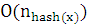

1. Giới thiệu
Cho trước một văn bản text được ghi dưới định dạng cho trước (.txt, .doc,…). Mục đích của chúng ta là lọc từ văn bản này ra các từ khóa và được sắp xếp theo định dạng cho trước. Ví dụ:
Đoạn text cần xử lý:
Ta ôm bó, cánh ta ta làm rắn
làm giây đa quấn quít cả mình xuân
không muốn đi, mãi mãi ở vườn trần
chân hoá rễ để hút mùa dưới đất
Để tạo ra các từ khóa, ta đưa chúng vào cặp thẻ $...$. Ví dụ các từ khóa:Ta, ta, làm, xuân, mãi,
$Ta$ ôm bó, cánh $ta$ $ta$ $làm$ rắn
$làm$ giây đa quấn quít cả mình $xuân$
không muốn đi, $mãi$ $mãi$ ở vườn trần
chân hoá rễ để hút mùa dưới đất
Kết quả đưa ra danh sách các từ khóa và chỉ số về thứ tự dòng chứa từ khóa.
Ta 1,
ta 1,
làm 1,2,
xuân 2,
mãi 3,
Từ khóa xuất hiện nhiều lần trên cùng một dòng cũng chỉ được in ra một lần đối với dòng đó (làm, mãi)
Như vậy, ta cần tạo ra một danh sách đi kèm cho mỗi từ khóa xuất hiện trong văn bản. Phương pháp xử lý thông dụng và hiệu quả đó chính là sử dụng bảng băm để cài đặt danh sách các từ khóa trong văn bản. Ở đây ta sử dụng phương pháp bảng băm chuỗi.
2. Bảng băm chuỗi: Phép băm với tạo chuỗi (Hashing with Chaining)
Cấu trúc dữ liệu dùng bảng băm chuỗi dùng phép băm và phép tạo chuỗi để lưu trữ mảng t, ccuar danh sách. Ta tạo ra n khóa trong bảng băm, mỗi khóa sẽ nắm giữ một danh sách các item.
List<T>[ ] t;
int n;
Fig 1. Một ví dụ bảng băm chuỗi, trường hợp n=14, t.length=16. Trong đó, hash(x)=6.
Giá trị băm của item x xác định bởi hàm băm hash(x) nhận các giá trị từ {0,1,…,t.length-1}. Tất cả các item có cùng giá trị băm là i thì đều nằm trong khóa t[i ]. Để đảm bảo danh sách khóa không quá dài. ta có
n≤t.length
Như vậy, trung bình số các phần tử được lưu trữ trong danh sách khóa là n/ t.length ≤ 1.
Để thêm một phần tử x, vào bảng băm, trước tiên ta cần kiểm tra nếu độ dài của t cần được tăng lên, ta sẽ phải thêm đọ dài cho nó. Ta tính giá trị băm của x, hash(x)=i. Khi đó ta sẽ nối thêm x vào danh sách của khóa t[i ].
boolean add(T x) {
if (find(x) != null) return false;
if (n+1 > t.length) resize();
t[hash(x)].add(x);
n++;
return true;
}
Khi dựng bảng băm, nếu cần thiết, ta có thể gấp đôi độ dài của t và lặp lại tất cả các phần tử ở bảng mới. Chi phí cho phép tăng này là một hằng số được khấu hao dần qua chuỗi các phép chèn.
Để xóa một phần tử x từ bảng băm, trước tiên ta cũng tìm khóa t[ hash(x)] đang cất giữ nó.
T remove(T x) { Iterator<T> it = t[hash(x)].iterator(); while (it.hasNext()) { T y = it.next(); if (y.equals(x)) { it.remove(); n--; return y; } } return null;}
Việc điều này mất  trong đó là độ dài của danh sách lưu trữ khóa t[i ].
Để tìm kiếm phần tử x trong bảng băm cũng tương tự phép xóa. Ta dò tuyến tính danh sách t[hash(x)].
T find(Object x) { for (T y : t[hash(x)]) if (y.equals(x)) return y; return null;}
Hiệu suất của bảng băm phụ thuộc rất nhiều vào hàm băm, Một hàm băm tốt sẽ phải giải quyết các vấn đề: Thời gian tính của hàm băm là bao nhiêu? Thời gian tìm kiếm sẽ như thế nào? Vì vậy hai yêu cầu đặt ra cho hàm băm là: phải phân bố đều các khóa vào các ô và không phụ thuộc vào dữ liệu đầu vào. Nếu số lượng khóa tỷ lệ với số lượng ô trong bảng băm thì kì vọng của kích thước của danh sách t[hash(x)] là O(n/t.length)=O(1).
2.1 Hàm băm – Phương pháp nhân
Trong phương pháp này, ta dùng bảng băm kích thước là với số nguyên d nào đó ( gọi là chiều của bảng). Công thức xác định hàm băm với số nguyên :
hash(x)=((zx mod )div )
Ở đây, z là số nguyên lẻ ngẫu nhiên được chọn từ . Hàm băm này hoạt động khá hiệu quả, bởi vì thao tác với số nguyên theo modulo trong đó w là số bit của số nguyên đó. Hơn nữa, việc thực hiện trên bit nhị phân sẽ đơn giản hơn rất nhiều so với việc tính toán trực tiếp với số nguyên, khi chia cho ta chỉ việc dịch phải bit.
int hash(Object x) { return (z * x.hashCode()) >>> (w-d); }
Fig 2. Các thao tác với phương pháp nhân, w=32, d=8
Bổ đề dưới đây cho thấy hàm băm dùng phương pháp nhân là một hàm tốt và tránh được các xung đột.
Bổ đề 2.1 Cho x và y là 2 số nguyên thuộc . với x ≠ y. Khi đó, Pr{hash(x)=hash(y)}≤2/.
Chứng minh:
Trước tiên ta sử dụng bổ đề về lý thuyết sô học sau,
Bổ đề 2.2 Với S là tập các số nguyên lẻ trong Gọi q và i là hai phần tử thuộc S. Khi đó tồn tại duy nhất một giá trị z thuộc S sao cho zq mod =i.
Bổ đề trên chính là kết quả của định lý về hệ thặng dư đầy đủ modulo( ở đây xét theo module ), và do S là hệ thặng dư đầy đủ nên ta có điều phải chứng minh. (Xem trong [1] trang 31)
∎.
Ta xác định điều kiện để hash(x)=hash(y) tương đương với “d bit cao nhất của zx mod và d bit cao nhất của zy mod là giống nhau”. Điều này tương đương với d bit cao nhất của z(x-y) mod là hoặc tất cả là 0 hoặc tất cả là 1. Tức là,
z(x-y) mod =(
(1).
Hoặc khi zx mod > zy mod thì
z(x-y) mod =(
(2).
(ta dùng kí hiệu để chỉ bit chưa xác định )
Từ đó, suy ra
trong hệ nhị phân của z(x-y) mod =zq mod  có w-r-1 bit
ngẫu nhiên, 1 bít 1 và r
bit 0 cuối cùng.
có w-r-1 bit
ngẫu nhiên, 1 bít 1 và r
bit 0 cuối cùng.
z(x-y) mod
=
zq mod  =()
=()
Nếu r>w-d khi ấy d bit cao nhất của zx mod chứa cả 0 và 1. Xác suất để (1) và (2) xảy ra bằng 0. Nếu r=w-d, Khi đó, xác suất để (1) xảy ra là 0, nhưng (2) là 1/=2/ (vì ta phải có ). Nếu r<w-d khi đó ta phải có hoặc . Khi đó xác suất mỗi trường hợp là 1/. Vậy xác suất lớn nhất có thể xảy ra là 2/.
∎.
Với bổ đề 2.1, ta có thể suy ra các kết luận sau về hiệu năng của các hàm remove(x) và find(x).
Bổ đề 2.3 Với mọi dữ liệu có giá trị x, kì vọng của chiều dài danh sách t[hash(x)] là , với là số lần xuất hiện của x trong bảng băm.
Chứng minh.
Gọi S là tập các phần tử chứa trong bảng băm nhưng không chưa x. Với mỗi y S, ta xác định chỉ số :
Chú ý rằng, từ kết quả của bổ đề 2.1, E[] 2/=2/t.length. Do đó, kì vọng của chiều dài danh sách t[hash(x)] được tính như sau,
∎.
2.2 Xử lý văn bản
Sau khi ta xây dựng được lớp hàm băm, việc thao tác trên đó rất đơn giản. Ta chỉ cần đưa các từ khóa có cùng giá trị hàm băm được đưa vào bảng với một ô trong bảng (sử dụng phương pháp nhân), sau đó ta đưa ra kết quả về số thự tự dòng xuất hiện từ khóa đó.
public indexBook() {
ds=new Hashtable<String, ArrayList<Integer>>();
}
Thủ tục xử lý với xâu kí tự đầu vào
private void xuly(String key,int lineNo) {
//chua co thi tao mot item moi
if(!ds.containsKey(key)) {
ArrayList<Integer>lst=
new ArrayList<Integer>();
lst.add(new Integer(lineNo));
ds.put(key, lst);
}
else //da co tu trong danh sach
{
ArrayList<Integer>lst= ds.get(key);
lst.add(new Integer(lineNo));
}
}
Thủ tục trước khi xuất File hiển thị kết quả :
public void xuatFile(String indexFile){try{ try(PrintWrite out=new PrintWriter(indexFile,”UTF-8”)){ Set<String>setKey=ds.keySet(); Iterator<String>it=setKey.iterator(); while(it.hasNext()){ String key=it.next(); //Neu key la tu khoa trong van ban if(keyWord(key)==true){ List<Integer>arr=ds.get(key);//Chuoi luu cac tu khoa cung ham bam
String idx=
arr.get(0).toString()+”, ”,past = “”; int count=0; for(int i=1;i<arr.size();i++) { count++; past=arr.get(i).toString(); if( past.compareTo(arr.get(i-1).toString()>0) { idx+=past+”, “; } }//end for past=null;//lam sach past cho phien sau //Ghi ra ket qua out.println(key.substring(1,key.length()- 1)+” ”+idx+”\n”); } }//end while out.flush(); } }}
Hàm kiểm tra từ khóa,
public boolean keyWord(String key) {
return (key.startWith(“$”)&&key.endsWith(“$”));
}
Dưới đây là ví dụ kiểm tra chương trình:
File input có tên là source.txt. Kết quả thực hiện :
Bố 146, 162, 163, 267, 272, 274, 276, 278, 280, 283,
cây 111, 239,
Mẹ 65, 67, 71, 83, 85, 89, 263,
Chúa 2, 63, 99,
con 11, 35, 53, 67, 69, 79, 81, 85, 93, 97, 148, 150, 155, 158, 159, 163, 179, 189, 191, 193, 197
203, 213, 215, 223, 225, 227, 231, 235, 239, 241, 243, 257, 267, 269, 276, 278, 283, 287, 311, 313,
Người 11, 93, 185, 187, 223, 225, 229, 231, 233,
3. Tham khảo
|
[1] |
Titu Andreescu, Dorin Andrica, Zuming Feng, 104 Number Theory Problems, Birkhauser, October 25, 2006 |
|
[2] |
Pat Morin, Open Data Struct(in Java)
|
|
[3] |
PGS TS Nguyễn Đức Nghĩa, Bài giảng Cấu trúc dữ liệu và giải thuật, NXB Đại học Bách Khoa Hà Nội, 2008, 274 trang
|
|
[4] |
Nguyễn Đức Nghĩa, Nguyễn Tô Thành, Toán rời rạc, NXB Đại học Quốc Gia Hà Nội, 2009, tải bản lần 8, 290 trang
|
|
[5] |
http://en.wikipedia.org/wiki/Hashtable
|
|
[6] |